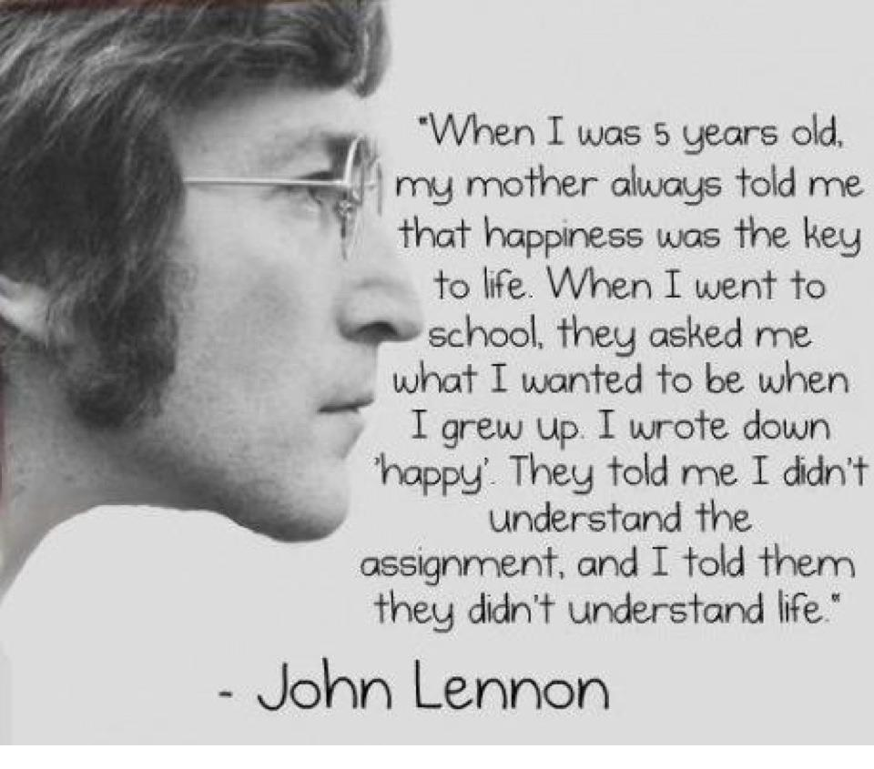
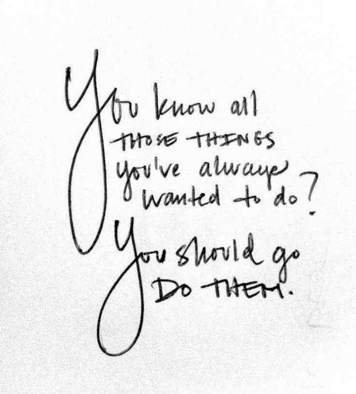

What We Live For
Conflict
I have to say my first thought when talking about conflict is screenwriting. Which for anyone who hasn't gone to film school may seem odd but I remember distinctly my first screenwriting class and how the concept of conflict was presented as the driver of all stories. While there is considerable truth to this, I remember how much it bothered me at the time because conflict itself was never an interest of mine. I was never inspired to write stories based on conflict, but at the same time there was admittedly always a conflict in my stories that occurred naturally out of the characters' motivations and actions.
Personally Speaking
In my own life there was one big conflict that occurred to me recently. Similar to my feelings about writing stories it wasn't my intention to get into a conflict, but my motivations and my basic identity and ideals are what caused it to occur.
I had risen fairly high up in my last job. I was the director of a department and working at times directly under the owners of the company. The place had been even according to them a mess which "they had never been able to get right" and I was brought on as it was explained to me to bring the experience needed to make it work. The experience to do this was something I had, and for awhile it was quite a great experience to have my own department, hire whomever I wanted and run it how I saw fit. They were great times and I will remember them for some time to come.
But I had a fundamental presupposition. In my mind a company existed for two aims. To benefit its customers first of all, and secondly to benefit its employees. Any company incapable of that in my mind did not deserve to exist. So therein lied the conflict that I found myself a part of.

Cash Money
The owners of the company fundamentally did not see it that way. Massive turnover of employees, disposable customers and complete lack of diversity did not even enter their radar. Profits, and the bottom line, were their sole preoccupation and the real reason for the company and their involvement. As simple as it sounds, and fundamentally in the end really was, I had a very difficult time understanding it and dealing with it in my time there.
There were times when I withdrew. Vowing to quit but never going through with finding another better place to work.
There were times when I avoided the looming inevitability, throwing parties with my department to celebrate the small accomplishments I was able to achieve.
And there were times when I stood my ground, steadfastly accusing them of ignoring my ideas and accusing theirs of being the stupidest suggestions I'd ever heard. Towards the end especially, I became very fed up with their way of conducting themselves, speaking very loudly about how idiotic and selfish I felt their actions were.
Moving On
So they outsourced my department. That's what happened in the end. They saved $15 a wedding by chopping up my domain and dividing it amongst four different companies in India. They got rid of me, the thorn in their side, and replaced me with obedient servants across the world who wouldn't dare question them for fear of losing their business.
I have no doubt they are happy with their decision. They are personally richer and they are that much closer to the biggest payoff, the selling off of their company (before its ultimate self-destruction). I think the hardest thing for me in this conflict was to realize that my opponents were not idiots. I felt they were because they were missing in my mind the whole point of life, but in the end they knew what they were doing. They knew a business with this many issues, the turnover and the thousands of unsatisfied customers could never last. So the only answer for them was to sell it off before everything hit the fan. They weren't stupid, they just fundamentally disagreed with my values.
Which frankly in the long run I still think makes them fools, because they are missing out on the most important things in life. But ultimately the solution for me is not to fight them to the death. My time and my life is too valuable, and I am moving on to new and larger ventures.
In the end this conflict ended with my being laid off. That is not to say I wasn't already looking for new places to work, because I was, but it was definitely their action not mine that drew it to a close. In the end I am grateful to be out of there, and fundamentally much better off because of it. What could I have done differently? I do wish I'd been able to do more in my time there to make it a better company. But at the same time I know I have bigger things ahead of me then fighting my bosses over how many weddings we should be ruining per customer. I've moved on, and ultimately that was the best move I could make.
#HackthePlanet!
